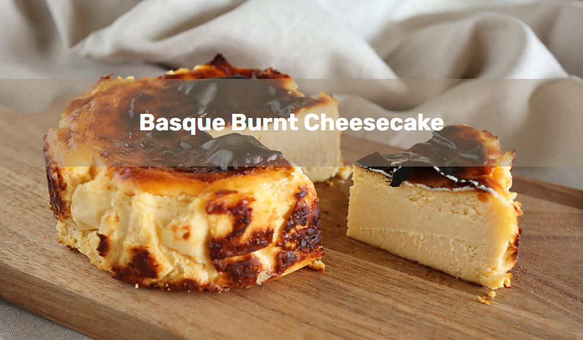
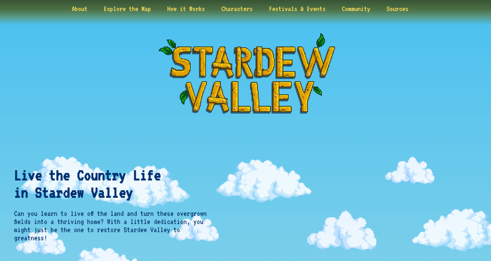

Recipe Page
A delicious journey into the world of dessert, showcasing a homemade Basque Burnt cheesecake recipe.
Microsite (Designer)
A collaborative design effort led under the direction of Zeyuan Zong, this microsite for Expedia Group serves as a multi-page exploration into the heart of the company.
Microsite (Creative Director)
Steering the creative helm alongside Marisa Benjamin, this microsite unfurls the world of Stardew Valley.